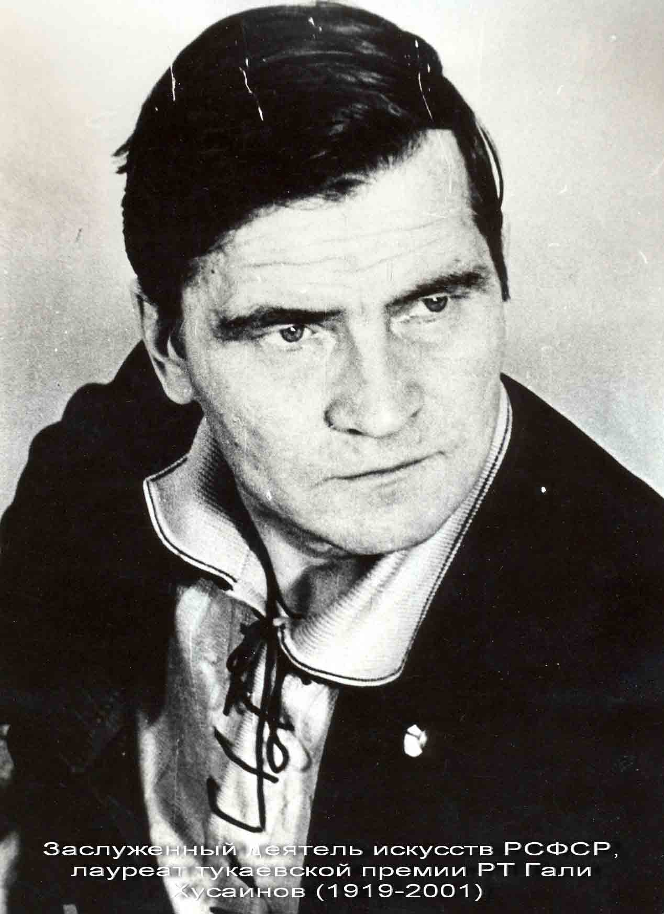

История театра
Сегодняшний Альметьевский театр - один из признанных коллективов Республики Татарстан. Но сколь труден был путь к подобной репутации. Сколько этапов - рождение, становление, современная стабильность - надо было пройти, чтобы добиться сегодняшнего признания.
Альметьевский государственный драматический передвижной театр – почти ровесник татарской нефти – был организован в 1944 году. Театр формируется на базе дома культуры, где директором работала Нагима Давлетшина. Вскоре появилась и первая профессиональная актриса – Нагима Кимова, окончившая театральный техникум. Затем в театр прибыли артисты Гибадулла Хабибов, Сания Хабибова, Касим Еникеев, Тагира Яббарова, Хади Залятов, Хамза Рамазанов, и коллектив смог обратиться к полноценным драматическим произведениям. Первой такой пьесой стала драма Р. Ишмурата «Возвращение», её поставил А. Галиев. Пока шло становление творческого состава театра приходилось больше обращаться к одноактным пьесам, как современных авторов, так и классиков татарской драматургии. Если учесть, что в то время не было элементарных сценических средств и, чтобы встретиться со своим зрителем приходилось шагать за десятки километров, да ещё тащить на себе реквизит и костюмы, понятен энтузиазм актеров, их любовь к искусству. Постепенно сложились традиции, в которых происходило воспитание молодых актеров. Как правило, в театре оставались те, у кого актерские способности сочетались с целеустремленностью, способностью преодолевать любые трудности. В результате в театре стали работать Сарвар Валиева, Галимзян Валиев, Ильгизар Катиев, Халима Маннурова, Гилемхан Камалов, Тайфур Кичубаев, Гульжиган Кичубаева, Жиган Саитова. Репертуар театра обогатился драмой «Песня жизни» М. Амира, пьесой «Тайна» Г. Ахмета, переводной пьесой «Сестренка» А. Назарова. В 1946 г. главным режиссером театра стал Камал Халяпов. Условия передвижного колхозно-совхозного театра накладывали определенный отпечаток на качество постановок, на творчество актеров. Это была одна из сложностей работы, другая, не менее сложная проблема – выполнение финансового плана. Театр дробился на три бригады, и каждая выступала с определенным спектаклем. Вся труппа встречалась только в тех спектаклях, когда ставились широкие полотна, посвященные какой-нибудь торжественной дате. Всё это сказывалось на облике театра, на игре актеров, на их судьбах. Главные усилия театра были направленына то, чтобы создать профессиональный единый коллектив, близкий и понятный зрителю.
{kind=link}
В 1952 – 59 г.г. художественным руководителем театра стал известный деятель татарского театрального искусства Саид Булатов. Будучи человеком образованным, с большой практикой постановочной работы, он вложил много сил в сплочение коллектива и повышение профессионального мастерства актеров, их теоретического уровня. Он поставил такие спектакли, как «Габбас Галин» Ш. Камала, «Встреча с юностью» А. Арбузова, «Последняя встреча», «Верный спутник», «Звезды сияют» С. Кальметова, «За туманом» Ш. Камала, «Нурихан» М. Хасанова, «Тайные следы» Х. Вахита, «Молодые сердца» Ф. Бурнаша. В этих спектаклях сумели утвердить себя художниками такие мастера, как З. Туишева, И. Умеров, Р. Губайдуллина, А. Галиуллин, Б. Батауллин, Л. Садыкова, А. Галиакберов, Т. Кичубаев, Г. Кичубаева. Но театр ещё был лишь на подступах к своей известности. После ухода С. Булатова сами актеры взялись за постановочную работу, иногда приглашая режиссеров из Казани и Уфы.
В 1963г. главным режиссером театра назначается известный режиссер с большим творческим и жизненным багажом, заслуженный деятель искусств ТАССР Габдулла Юсупов. За четыре года работы он поставил 17 спектаклей разного жанра и разнопланового характера, театр изменился до неузнаваемости. Серьезное внимание Г. Юсупов обратил на режиссерскую политику театра, и были поставлены такие спектакли, как «Потоки» Т. Гиззата, «Костры горят» Г. Ахунова, «Осенние ветры» А. Гилязова, «В ночь лунного затмения» М. Карима, «Зубайда – дитя человеческое» Ш. Хусаинова. При нём в театре была организована студия, выпускники которой К. Валеев, Д. Кузаева, Л. Султанова, А. Мусина, Дж. Исмагилов заняли впоследствии ведущее положение в театре. Ещё одна большая заслуга режиссера Г. Юсупова заключается в том, что он заглядывал в будущее театра, сумел создать условия для артистов желающих заниматься постановочной работой. Уже при нем уверенно заявила о себе Закия Туишева. Он привлек её к режиссерской работе, совместно сотрудничая с ней во время репетиций над спектаклями. Пробует свои силы в режиссуре и артист Рамазан Ихсанов. Итак, в середине шестидесятых театр стал набирать творческую высоту.
{kind=link}
Но настоящее признание пришло, когда в коллектив пришел режиссер, заслуженный деятель искусств РТ и России Гали Хусаинов. Неугомонный, беспокойный, жадный до творчества, требовательный во всем режиссер Гали Хусаинов буквально заразил театр своей трудоспособностью, одержимостью, любовью к театру. Улучшился микроклимат в театре, творческая обстановка стала наравне с большими творческими коллективами. Актерский состав стал стабильным. Фундамент театра, заложенный первыми актерами, режиссерами С. Булатовым и С. Юсуповым, стал прочной основой для строительства настоящего очага культуры. Популярность театра стала расти из года в год. Поставленные им «Козы – Корпеш и Баян – Сылу» Мусрепова, «Материнское поле» Ч. Айтматова, «Трактирщица» Гольдони, «Если нет луны, есть звезды» Т. Миннуллина (драматург, режиссер Г. Хусаинов, исполнитель главной роли Д. Кузаева в 1979 году были удостоены Государственной премии им. Г. Тукая), «Антигона» Ж. Ануя вывели театр на новые рубежи, обозначили творческую зрелость коллектива.
{kind=link}
Главным режиссером Р. Абдуллаев становится в 1983г. и по 1987г. возглавляет этот театр. За это время были отдельные интересные спектакли, но они не стали той вершиной, которая бы определяла творческие искания театра. Среди таких постановок можно назвать «А зори здесь тихие...» Б. Васильева, «Без ветрил» К. Тинчурина, «В пятнадцатых числах мая» Р. Хамида, «И горит же сердце» Ш. Шагали, «Сирина – дочь Сармата» Н. Фаттаха. Но, несмотря на возможные сложности, влюбленные в свое дело, в свое детище – театр актеры не уходят. По мере сил и возможностей продолжают трудиться Л. Садыкова, А. Садыкова, М. Нигматзянова, Г. Камалов. Также верны выбранному пути среднее поколение: К. Валеев, Д. Кузаева, Ф. Зарипов, Л. Султанова, Р. Салихова.
В марте 1989 года Альметьевский совет народных депутатов и объединение «Татнефтегазстрой» принимают радостное для актеров решение о передаче Дома техники Альметьевскому театру. Это случилось через 45 лет после его рождения.
Начало 1990-х годов – сложное время для театра. Обратились к Закии Туишевой. Она снова окунулась в сценический мир и сумела сплотить коллектив вокруг себя. На республиканских театральных фестивалях имени К. Тинчурина театр из года в год представлял новые, интересные постановки З. Туишевой. Спектакли «Банкрот» Г. Камала, «Молодые сердца» Ф. Бурнаша, «Судьба татарки» Г. Ибрагимова заслужили признание жюри.
С 1995 года и по 2002 год театром руководила заслуженный работник культуры РТ Тамара Сулеймановна Халитова. Настойчивая, целеустремленная работа директора привела к тому, что театр участвовал в разных фестивалях, выезжал за границу со спектаклем татарского классика М.Файзи «Белый калфак» (реж.Ф.Бикчантаев) на XI Международный фестиваль экспериментальных театров в Каире (Египет-99г.)
{kind=link}
В 1997 году народного артиста РТ, заслуженного артиста России Камиля Мухаметшакировича Валеева, пришедшего в театр 1964 году, назначают главным режиссером. К.Валеев всегда щедро делился с другими артистами своим богатым сценическим опытом и ставил спектакли, где остро поднимались волнующие проблемы времени. Большая заслуга главного режиссера К.Валеева заключается в том, что он, заглядывая в будущее театра, совместно сотрудничает с другими режиссерами. Благодаря его методу работы с режиссерами, появились такие спектакли, как «Жениться не грех» Р.Хамида, «Сафиулла» М.Гилязова, «Любовница» Т.Миннуллина, «Белый калфак» М.Файзи, «Неспетая песня» М.Карима и другие. Режиссерами этих спектаклей были народный артист РТ, заслуженный артист России Ильдар Хайруллин, заслуженный деятель искусств РТ Фаиль Ибрагимов, заслуженный деятель искусств РБ Байрас Ибрагимов, заслуженный деятель искусств РТ, лауреат Гос. премии им. Г.Тукая Фарит Бикчантаев, народный артист РТ, заслуженный артист России Камиль Валеев. Никогда они не стесняли друг друга, им удалось сохранить традиции, основанные на реалистической и психологической школе театрального искусства.
В феврале 2005 года новым директором театра стала Исмагилова Фарида Багисовна – человек неиссякаемого энтузиазма, обладающий замечательными организаторскими способностями. А вскоре труппу возглавляет режиссер Ильяс Сахипгареевич Гареев. И театр начал стремительно меняться. Превращение театра в настоящий храм искусства произошло после капитального ремонта на средства ОАО «Татнефть» благодаря инициативе генерального директора Тахаутдинова Ш.Ф. И теперь это уютное, красивое театральное здание имеет необходимые зал, гримерки, служебные помещения.
{kind=link}
Сегодня Альметьевский театр продолжает развивать те творческие принципы, которые определяли его деятельность в предыдущие годы, активно развивает и укрепляет межрегиональные и международные связи, сотрудничает с известными режиссерами и художниками, ежегодно выпускает 7-8 премьерных постановок, разрабатывает и осуществляет новые творческие проекты: “Место встречи – театр”, «Театральная пятница», “Четыре стороны света”, «Татарстан-Кавказ: легенды сближают нас», благотворительный марафон «Күңел күзе – Глазами сердца», детские проект «Я - актер», «Туфан мәктәбе», уникальный творческий проект «Героика и мелодика Победы, «Слово во Вселенной», флэшмоб «Слово поэта», «Афәрин!-Браво!»,
Появились спектакли другой, современной эстетики, которые стали востребованными на фестивалях. Фестиваль театров малых городов России, «Театральная весна», «Волга театральная» (Самара), фестиваль им. Володина «Пять вечеров» (Санкт-Петербург). Спектакль “Ашик Кериб” М.Лермонтова (режиссер Искандэр Сакаев, Санкт-Петербург) ”Лучший спектакль” на фестивале молодой режиссуры “Ремесло” (2010г.), “Лучший спектакль на международном фестивале тюркских народов “Науруз” (2011г.), специальный диплом жюри на Всероссийском фестивале «Арлекин» (2011г.), диплом в номинации “Лучшая сценография” на фестивалях театров малых городов России и “Алтын Сэргэ” (2011 г.), признан “Событием года” и удостоен республиканской театральной премии “Тантана” (2012г.), участник фестиваля искусств в Мармарисе (Турция, 2013г.), а на фестивале «Маскерадъ» награжден дипломом в номинациях «Лучшая режиссура» и «Лучший актер». Спектакль “Король-олень” К.Гоцци (реж. Звездана Ангеловска, Македония) удостоен диплома “За пластическую выразительность” на фестивале театров малых городов России (Лысьва, 2012г.). Трагифарс “Мещанская свадьба” Б.Брехта (реж.И.Сакаев) лауреат премии “Лучшая мужская роль второго плана” на I межрегиональном фестивале “Волга театральная”. “Хрустальный фронтон” в номинации “Эффектное пластическое решение “ на международном фестивале “Театр.Ялта. Чехов”, 2016.
{kind=link}
Театр стал триумфатором на XII театральном фестивале малых городов России в 2014 г. «Ромео и Джульетта» У. Шекспира была признана «Лучшим спектаклем» фестиваля, стала участником фестиваля «Прорыв» в Санкт-Петербурге и включена в лонг-лист фестиваля «Золотая маска», в рамках программы «Маска плюс» спектакль показан в Москве.
{kind=link}
Спектакль «Бистә фәрештәсе» (Добрый человек из Сычуани») Б.Брехта стал участником XVII международного театрального фестиваля «Радуга» (Санкт-Петербург, 2016), на 2-ом всероссийском молодежном театральном фестивале им. В.Золотухина (Барнаул) удостоился диплома в номинации «За творческий ансамбль».
Театр живет напряженной творческой жизнью, много гастролирует. Благодаря своей мобильности и высокому творческому потенциалу театр широко известен как в самой Республике Татарстан, так и далеко за её пределами. Радует, что в Республике Дагестан, Башкортостан, в Челябинской, Ульяновской, Самарской, Оренбургской областях, в Москве, Ижевске, Йошкар-Оле, Саранске театр уже приобрел своего преданного зрителя. В апреле 2017 года Альметьевский театр впервые выехал на фестиваль в Европу. На IV международном фестивале MITEM в Будапеште играли спектакль «Ашик Кериб» М.Лермонтова.
{kind=link}
Театр востребован не только у зрителей. Очень важный показатель – приток свежих сил. Выпускники театральных учебных заведений стремятся попасть в Альметьевский театр несмотря на конкурсный отбор, ибо силен соблазн серьезных творческих стимулов.
Альметьевский драматический театр драмы награжден дипломами конкурсов «100 лучших товаров России», «Благотворитель года» в Татарстане, удостоился премии им. М. Джалиля РТ. Театр активно участвует в конкурсах на получение грантов. Неоднократно выиграл грант правительства РТ для поддержки лучших учреждений культуры, искусства и кинематографии, грант Министерства Культуры Российской Федерации на Конкурсе по поддержке молодой режиссуры, грантов СТД РТ.
{kind=link}